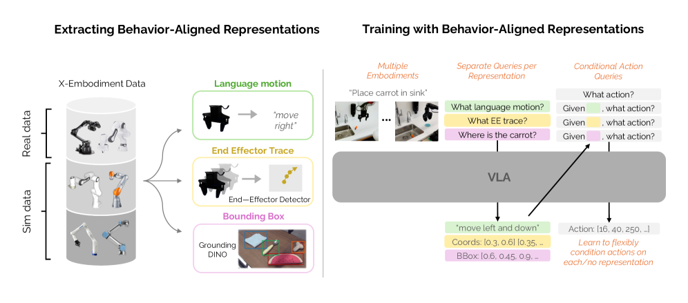
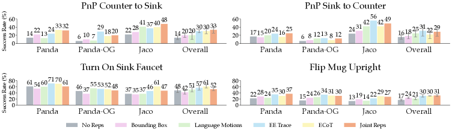

Cross-EmbodimentBehavior-AlignedEE TracesMiniVLAAction-Free Data
제출: 2026년 7월 30일 · 백본 MiniVLA (pre-trained VLM, robot pre-training 없음) · RoboCasa-X 벤치
한 줄 요약 (TL;DR)
Cross-embodiment 전이는 서로 다른 로봇의 시각·액션 공간 차이로 어렵다. 저자들은 embodiment 간 불변(invariant)이면서 액션을 예측(predictive)하는 3종 behavior-aligned representation—bounding boxes, language motions, end-effector traces—을 MiniVLA에 autoregressive auxiliary target으로 추가. EE trace가 가장 효과적이며, RoboCasa-X에서 XP-900 +15%p, XP-3K +19%p, action-free 데이터 활용 +14%p, 실로봇 sim-to-real +28% 태스크 진행률 향상.
1배경 · 문제의식
대규모 로봇 데이터셋을 여러 embodiment에서 모아도 cross-embodiment transfer가 잘 안 되는 것이 반복 관찰된다. 원인은 embodiment마다 (a) 시각적 외형 (b) 액션 표현 (c) proprio가 다르기 때문. 액션이 없는 action-free 데이터 활용도 미완이다. 저자들은 중간 표현이 embodiment 불변이면서 액션에 강하게 상관하면 두 문제가 동시에 풀린다는 가설을 세운다.
2핵심 Contribution
Behavior-Aligned Representation 3종 체계적 연구 — bounding boxes / language motions / end-effector traces가 embodiment 불변이면서 액션 예측적임을 규명. EE trace가 가장 효과적.
MiniVLA에 auxiliary token 통합 — action 예측 전에 표현 subset을 autoregressive로 예측. Behavior cloning + auxiliary representation loss(λk=1). Action-free 데이터도 이 auxiliary로 활용 가능.
Sim-to-real 실증 — FR3·ViperX 300 S에서 sim pretraining이 실 로봇 태스크 진행률 +28% 개선. 도메인 갭이 크더라도 representation이 bridge 역할.
3Method
3종 Behavior-Aligned Representation
Bounding Boxes — VLM scene description + Grounding DINO로 조작 타깃 물체를 검출.
Language Motions — proprio 상태 변화 임계로 방향 서술 자동 라벨링 (예: "move left and down").
End-Effector Traces — 이미지 관찰 프레임 내 향후 EE 2D 위치 시퀀스. 사전학습 모델로 감지. 3종 중 가장 강력한 전이 신호.
MiniVLA 통합
MiniVLA의 pre-trained VLM에서 시작(robot pre-training 없음). 학습 시 표현 subset을 분포 prep(z̃)로 샘플, action 이전에 autoregressive text로 예측. 최종 손실: L = LBC + Σk λk·Lrepk, λk=1 all. 추론 시 표현 예측은 소폭 도움이지만 실질 이득은 훈련-time regularization에서 나옴.
RoboCasa-X 벤치
Source embodiments
IIWA · Kinova3 · UR5e
Target embodiments
Panda · Jaco · Panda-OG
태스크
Pick-and-Place 변형 3개 + Flip Mug Upright
사전 데이터 규모
XP-900 (900 demo) · XP-3K (3,000 demo)
Target 데이터
50 human demo/태스크
4실험 결과
표현별 효과 (평균 성공률 기여, %p)
표현
XP-900
XP-3K
Target-only baseline
Bounding Boxes 단독
+—
+—
+5
Language Motions 단독
+—
+—
EE Traces 단독
최대
최대
Joint (3종 결합)
+15
+19
Panda-OG(가장 다른 embodiment)에서는 EE trace 단독이 Joint보다도 우수. Joint는 전반적 최고이나 특정 target에선 단일 표현이 더 안전.
Action-Free 데이터 활용
Representation 있는 action-free pre-training: from-scratch 대비 +14%p.
Action 있는 full prior dataset(단, representation 없음) 대비 +11%p.
→ 액션 없는 데이터도 representation supervision으로 실질 이득 창출.
Sim-to-Real (FR3 + ViperX 300 S)
Sim(RoboCasa-X) → 실 FR3/ViperX 이전 시 태스크 완료율 +28%p. 도메인 갭(시각·액션 공간 차이)이 큰데도 behavior-aligned representation이 bridge 역할.
Scaling 효과
사전 데이터 규모가 클수록 representation 이득 확대: XP-900의 +15 → XP-3K의 +19. Target-only 훈련에 붙일 때(+5)와 대조.
5Ablation & 주요 발견
표현 계층: EE trace > Language > Bounding Box. EE trace가 손끝 궤적을 직접 담아 액션에 가장 상관됨.
Joint 표현의 함정: 대부분 최고이지만 Panda-OG처럼 강한 도메인 shift에선 단일 EE-trace가 우세. 표현 조합이 항상 만능은 아님.
추론-time 예측: 표현을 실제로 예측하는 것보다 학습-time auxiliary supervision이 이득의 대부분을 차지.
Data scaling: 표현 사용 시 데이터 규모에 따라 로그-선형 이득. 표현 없이는 이득 sub-linear.
6핵심 Figure / Table

Figure 1 — Representation 추출. 각 프레임에서 bounding box(Grounding DINO), language motion(proprio 변화), EE trace(pretrained 감지기)를 뽑아 MiniVLA에 auxiliary target으로 주입. (출처: arXiv:2607.27549)

Figure 3 — 표현 종류별 성공률. EE trace가 세 표현 중 가장 강력. Joint는 전반 최고이나 Panda-OG(강한 shift)에선 EE trace 단독이 더 우수. (출처: arXiv:2607.27549)
Sim-to-Real +28% — 시뮬 사전학습만으로 실 FR3/ViperX 태스크 완료율 +28%p. 도메인 갭이 큰 세팅에서 behavior-aligned representation이 공통 language 역할을 한다는 강한 증거.